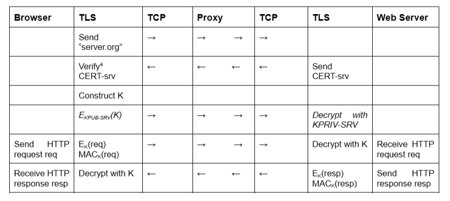
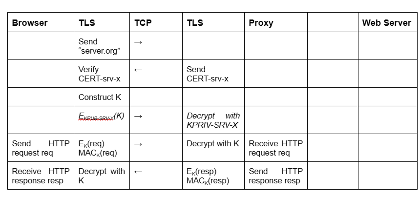
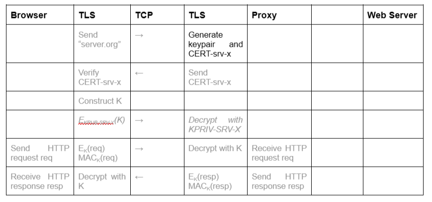
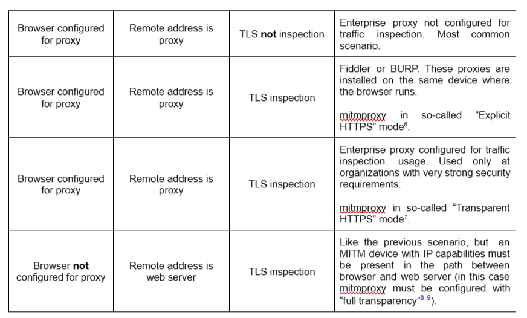

Understanding MITM proxies with HTTPS
Connection between a browser and a web server may be mediated by an HTTP proxy, a proxy for short. In general, there are always two TCP connections involved: one between browser and proxy, another between proxy and web server. When considering the details, however, many different scenarios may occur in practice.
In this document we attempt to summarize all those scenarios in order to simplify their understanding and their relation to significant MITM attack scenarios.
Categorization
We categorize connection scenarios based on three binary properties.
- Configuration Browser may or may not be configured to use a proxy.
- Remote address Browser may or may not observe
IP-wsas the IP address at the other end of the connection. -
TLS inspection Proxy may or may not decrypt HTTPS conversation between browser and web server.
-
These properties are independent of each other in the sense that any combination is possible. Furthermore, any combination may occur irrespective of the presence of an attacker, i.e., it may correspond to a legitimate insertion of a proxy between browser and web server.
Some combinations are more common than other combinations and some combinations do not serve any practical purpose and do not occur in practice. Some combinations are typical of enterprise environments and some other combinations are mostly used by network attackers.
We will discuss each property in isolation. Then, we will describe relevant practical scenarios in terms of those properties. Finally we will describe complete executions for a few scenarios.
We consider the presence of a legitimate proxy and of a proxy controlled by a network attacker. We will denote the latter as an “evil proxy”. We will use the term “proxy” when its nature, legitimate vs evil, is irrelevant. We use the following notation:
- Legitimate proxy named
proxy.orgat IP addressIP-leg. Certificate CERT-px with KPUB-px. - Evil proxy at IP-address
IP-att. Certificate CERT-att with KPUB-att - Web server named server.org at IP-address
IP-srv. Certificate CERT-srv with KPUB-srv.
We assume that the browser connects to an HTTPS URL. This analysis can be modified for HTTP URLs (SSLStrip attacks) easily.
We refer to a browser but the analysis applies unmodified to any client program that uses HTTP/HTTPS.
Configuration
If the browser is configured to use a proxy then its actions for establishing the TCP connection can be summarized as follows:
- IP-x := DNS-Resolve(“proxy.org”)
- TCP-Connect(IP-x, 443)
- Send HTTP Request(“CONNECT server.org”)
If the browser is not configured to use a proxy, then its actions are:
- IP-x := DNS-Resolve(“server.org”)
- TCP-Connect(IP-x, 443)
Remote address
The remote address of the TCP connection open by the browser may be either IP-leg, or IP-att, or IP-srv, as follows:
- IP-leg:
- Browser configured to use a proxy.
- Browser not configured to use a proxy. DNS-Resolve(“server.org”) returns IP-leg because of policies enforced at the organization of the browser.
- IP-att:
- Browser configured to use a proxy. DNS-Resolve(“proxy.org”) returns IP-att because of an attack.
- Browser not configured to use a proxy. DNS-Resolve(“server.org”) returns IP-att because of an attack.
- IP-srv:
- Browser not configured to use a proxy.
A proxy may be in the path between browser and web server even in this case. This occurs when a device with MITM capabilities at the IP level is present in the path between browser and IP-srv. The mitmproxy tool configured in the so-called “Transparent mode” with “full transparency” has this capability (How mitmproxy works - mitmproxy docs, Transparent Proxying - mitmproxy docs) .
In this case there is a single TCP connection between browser and web server, but the proxy has full MITM capabilities in this connection. In all the other cases, there are two TCP connections, one between browser and proxy, the other between proxy and web server.
Notice that these considerations are independent of the nature of the proxy, i.e. whether it is legitimate or evil.
TLS inspection
If the proxy does not perform TLS inspection, which is very common, then the proxy moves bytes back and forth between the two TCP connections, the one browser-proxy and the other proxy-web server. TLS establishment occurs between browser and web server. The resulting message exchange is summarized below, assuming the two TCP connections are already open (In most cases the proxy has learnt the association between the two connections by the HTTP CONNECT message previously sent by the browser. If this message was not sent, because the browser is not configured to use a proxy, then the proxy may learn the association with the first TLS message, as this message specifies the name of the web server).

(the Verify step includes the check CERT-srv.subject = “server.org”)
If the proxy performs TLS inspection, then there are two cases:
- The proxy has already available a keypair and a certificate with the web server name as subject that is considered valid by the client.
- The proxy generates a keypair and certificate on-the-fly with the web server name as subject and a certification authority trusted by the browser as issuer.
Notice that the ability to perform TLS inspection does not depend on the nature of the proxy, i.e., whether it is legitimate or evil (legitimate use cases can be found in Encrypted Traffic Analysis — ENISA) .
In practice, case 1 may occur for only a few of the web servers contacted by the browser---the set of certificates already available at the proxy is typically small. In those scenarios, the proxy will alternate between the two behaviors (TLS inspection vs TLS not inspection) depending on the web server name.
Proxies able to support case 2 may also alternate between the two scenarios: they may work mostly in not inspection and activate inspection only on certain web server names, or they may work mostly in inspection and deactivate inspection only on certain web server names. The former could be typical of an evil proxy (interested only in certain web servers), the latter of a legitimate proxy (willing to preserve privacy of users on certain web servers as specified by the enterprise policy).
HTTPS decryption with keypair and certificate already available to the proxy (denoted as CERT-srv-x) is summarized below. The proxy may or may not maintain another HTTPS conversation with the Web server and may or may not use content provided by the web server in responses for the browser. The interaction proxy-web server is irrelevant from our point of view and not shown for ease of description.

HTTPS decryption with keypair and certificate generated on-the-fly (denoted as CERT-srv-x) is summarized below. Actions identical to the previous case are indicated with gray font for clarity. The interaction proxy-web server is not shown for the same reasons as above.

Significant scenarios
The following table contains a non-exhaustive list of scenarios of practical interest described in terms of the framework of this document.
